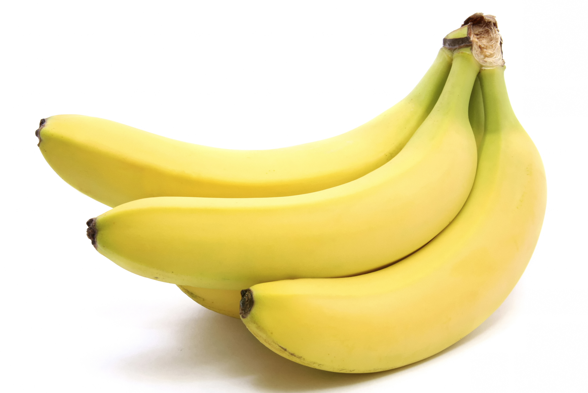
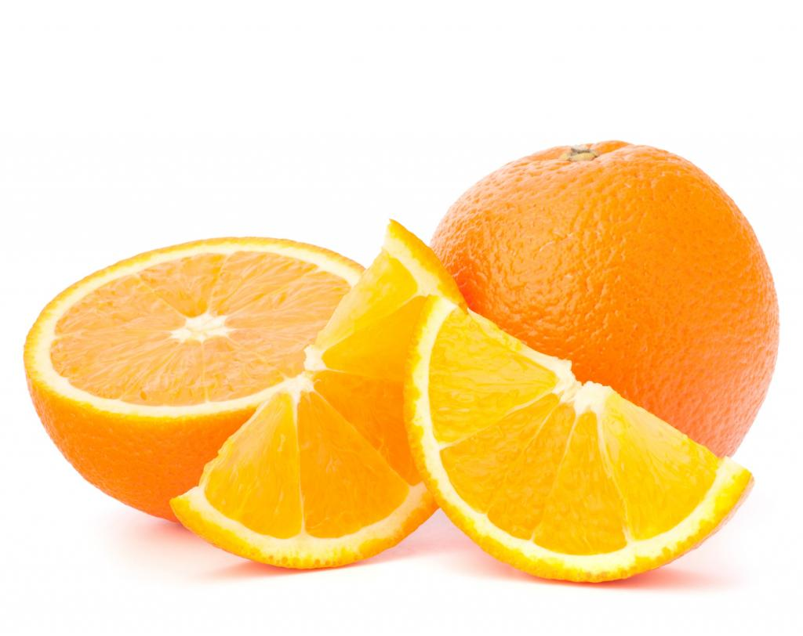

Fruits
Dans le langage courant et en cuisine, un fruit est un aliment végétal, à la saveur sucrée,
généralement consommé cru.
Étymologie
Le terme «fruit» provient du latin fructus qui a, dès l'époque latine, les différents sens que
l'on lui connaît aujourd’hui. C'était le participe passé de fruor.
Fraise
La fraise
est un nom vernaculaire désignant en français les fruits de plusieurs espèces de fraisier,
plantes herbacées du genre Fragariade la famille des Rosaceae. Ces fruits sont botaniquement
parlant des faux-fruits. En Europe et en Amérique du Nord, les fruits de l'espèce Fragaria
vesca, le fraisier des bois, sont de petite taille. Connus depuis l'Antiquité, les Romains les
consommaient et les utilisaient dans leurs produits cosmétiques en raison de leur odeur
agréable. Elle est cultivée dans les jardins européens vers le XIVe siècle. Le fraisier musqué
est connu pour ses fruits petits d'une saveur musquée unique que les connaisseurs donnent comme
supérieur à la fraise des jardins. Il est cultivé depuis le XVIè siècle. Le premier cultivar
connu du genre Fragaria appartient à cette espèce avec 'Le chapiron' nommé en 1576. Le fraisier
vert a été très peu cultivé car ses fruits sont moins intéressants par leur acidité plus forte
que les espèces ci-dessus. Cependant il a fait l'objet de cueillettes pour la consommation
personnelle.
Banane

La banane
est le fruit, ou baie dérivant de l'inflorescence du bananier. Les bananes sont les fruits
climactériques très généralement stériles issus de variétés domestiquées. Les fruits des
bananiers sauvages possèdent des graines et sont généralement jaunes lorsqu'ils sont mûrs. Les
bananes constituent un élément essentiel du régime alimentaire de certains pays et constituent
une nourriture de base pour des millions de personnes sous les tropiques.
Kiwi

Les kiwis
sont des fruits de plusieurs espèces de lianes du genre Actinidia, famille des Actinidiaceae.
Ils sont originaires de Chine, notamment de la province de Shaanxi. On en trouve par ailleurs
dans des climats dits montagnards tropicaux. En France, les kiwis del'Adour disposent d'une IGP
et d'un label rouge.
Sa pulpe généralement verte, sucrée et acidulée, entourée d'une peau brune et duveteuse
(poilue), contient une centaine deminuscules graines noires comestibles. Le kiwi est une source
de vitamine C, mais aussi de vitamine A et E, de calcium, de fer et d'acide folique.
Il existe différentes espèces, comme Actinidia chinensis, Actinidia deliciosa, le kiwai
(Actinidia arguta), le kiwi arctique, etc.
Orange

L’orange
est un agrume, fruit des orangers, des arbres de différentes espèces de la famille des Rutacées
ou d'hybrides de ceux-ci. Il en existe donc plusieurs types, principalement issus de l'espèce
Citrus sinensis comme les oranges sanguines, et les oranges amères produites par le bigaradier.
Comestible, elle est très riche en vitamine C. C’est le quatrième fruit le plus cultivé au
monde.